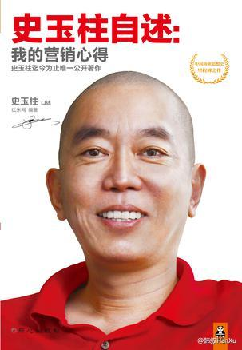
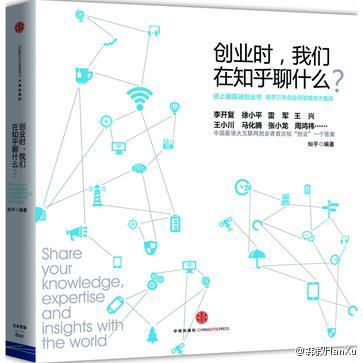
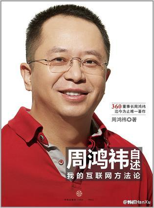

这个微博是搞医闹的么？//@王小沙大夫:博主子宫挺多，脑子却很少，关键是没良心。[最差]@上海滩的李律师:#医疗纠纷#【高龄女子被误切子宫】张女士是一位高龄产妇，这次怀孕很不容易，去医院检查才知是宫外孕，如果生下孩子会非常危险，于是不得已做了引流手术，结果又被告知要切除一个子宫才能保住大人，最后一检查，发现两个子宫都被切除了，看来是得子无望了，这事医院怎么解释呢？@湖北尊而光律师事务所
史玉柱那本书买过，内容很不错。要说系统的书，教材最适合，精品多是国外教材。还有就是国人“编著”的各类书。国内也就是一些自述性的书，还有些营养，口语化是一种趋势。@韩叙HanXu:周鸿祎和史玉柱的口述被整理一下就出书了，知乎和创业家杂志也是整理一下积累的内容也出书了。这年头出书越来越简单，只靠整理就能搞定。但上面的那几本书都缺乏深度，不系统不连贯，甚至过分口语化，重复的内容也很多。图中这几本书不建议购买和阅读。 
这种简单粗暴的方式仍然有效，可以低工资雇佣低水平的人来操作，只要收获大于支出，还是一直会有人做的。不过类似公地现象，大家都用这种粗暴方式骚扰用户，就会造成市场中的每个参与者都要承担用户反感和不信任的后果。---:抱歉，此微博已被作者删除。查看帮助： 网页链接
 [最差]
[最差]